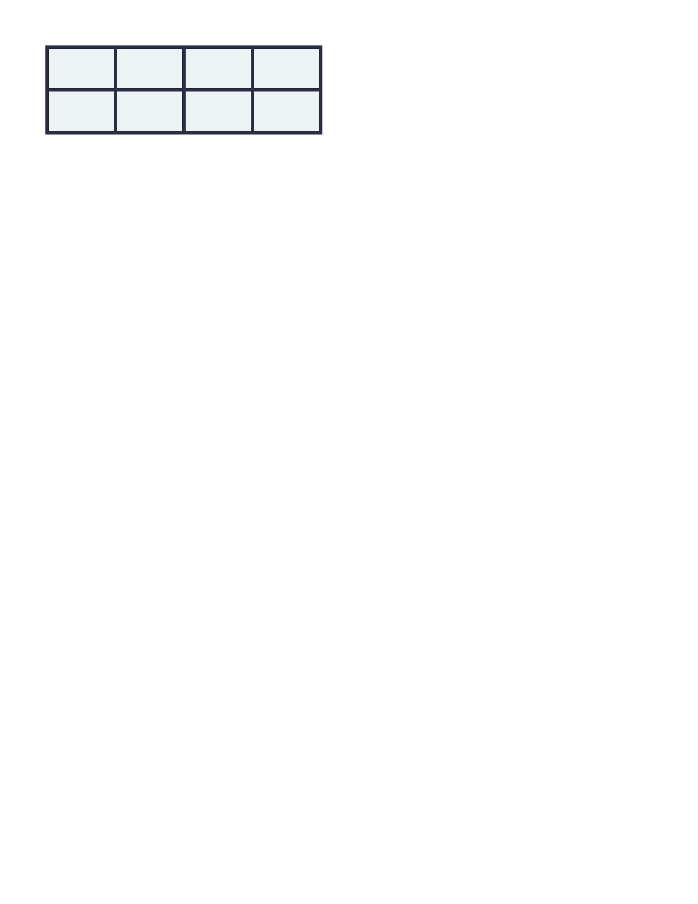
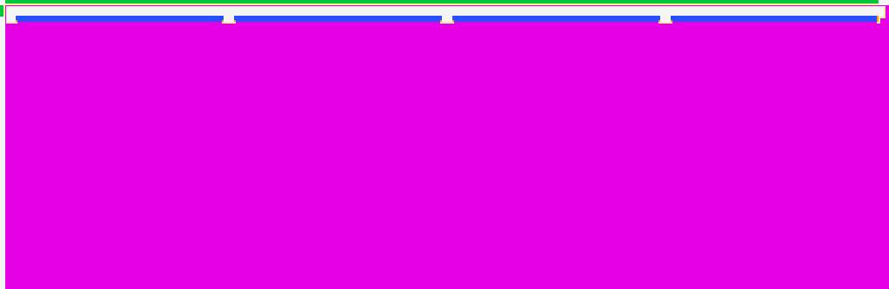
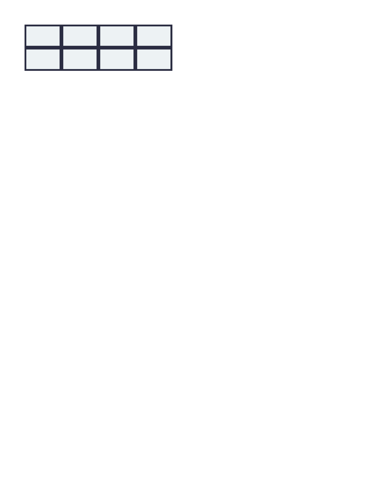
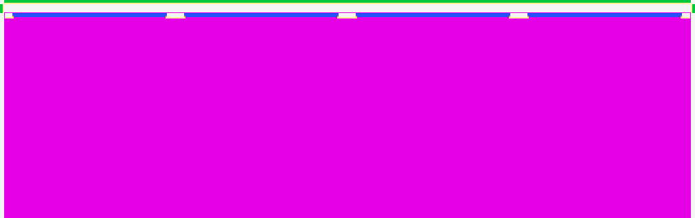

border-collapse — 0.00% all categories ↑
FAIL 95.07% tables-border-collapse · collapse · REALMissing+97.9px Bmissing 94.1%extra 16.1%ΔE 70.6shift (0.1,0.3)px



diff colours:MissingExtraColorErrGeomShiftAA edgeMatchAA / edge-jitter = cross-rasterizer measurement ceiling, not a bug.
why: feature not rendered — candidate blank where Chrome paints
border-collapse:collapse merges adjacent 4px cell borders into shared single edges.
regions (3)
| class | bbox (CSS px) | area% | magnitude | reason |
|---|---|---|---|---|
| Missing | 2,2 → 325,106 | 93.87 | ΔE 70.6 ΔRGB(-194,-197,-178) shift(0.1,0.3) | feature not rendered — candidate blank where Chrome paints |
| Extra | 2,0 → 322,1 | 1.19 | extra paint where Chrome is blank (1.2%) | |
| Extra | 0,2 → 1,6 | 0.02 | extra paint where Chrome is blank (0.0%) |
source · cases/tables/tables-border-collapse.html
1<!DOCTYPE html>
2<html lang="en">
3<head>
4<meta charset="utf-8">
5<title>tables-border-collapse</title>
6<style>
7 * { margin: 0; box-sizing: border-box; }
8 html, body { background: #ffffff; }
9 body { padding: 16px; font-family: sans-serif; }
10 table {
11 border-collapse: collapse;
12 table-layout: fixed;
13 width: 320px;
14 }
15 td {
16 width: 80px;
17 height: 50px;
18 border: 4px solid #2b2d42;
19 background: #edf2f4;
20 }
21</style>
22</head>
23<body>
24 <table>
25 <tr><td></td><td></td><td></td><td></td></tr>
26 <tr><td></td><td></td><td></td><td></td></tr>
27 </table>
28</body>
29</html>
FAIL 94.21% tables-border-separate · separate · REALMissing+93.8px Bmissing 93.8%extra 16.3%ΔE 70.6shift (0.0,0.5)px



diff colours:MissingExtraColorErrGeomShiftAA edgeMatchAA / edge-jitter = cross-rasterizer measurement ceiling, not a bug.
why: feature not rendered — candidate blank where Chrome paints
border-collapse:separate with zero spacing keeps each cell's 4px border doubled at shared edges.
regions (4)
| class | bbox (CSS px) | area% | magnitude | reason |
|---|---|---|---|---|
| Missing | 2,6 → 322,101 | 92.93 | ΔE 70.6 ΔRGB(-194,-197,-178) shift(0.0,0.5) | feature not rendered — candidate blank where Chrome paints |
| Extra | 2,0 → 322,1 | 1.24 | extra paint where Chrome is blank (1.2%) | |
| Extra | 0,2 → 1,6 | 0.02 | extra paint where Chrome is blank (0.0%) | |
| Extra | 323,2 → 324,6 | 0.02 | extra paint where Chrome is blank (0.0%) |
source · cases/tables/tables-border-separate.html
1<!DOCTYPE html>
2<html lang="en">
3<head>
4<meta charset="utf-8">
5<title>tables-border-separate</title>
6<style>
7 * { margin: 0; box-sizing: border-box; }
8 html, body { background: #ffffff; }
9 body { padding: 16px; font-family: sans-serif; }
10 table {
11 border-collapse: separate;
12 border-spacing: 0;
13 table-layout: fixed;
14 width: 320px;
15 }
16 td {
17 width: 80px;
18 height: 50px;
19 border: 4px solid #2b2d42;
20 background: #edf2f4;
21 }
22</style>
23</head>
24<body>
25 <table>
26 <tr><td></td><td></td><td></td><td></td></tr>
27 <tr><td></td><td></td><td></td><td></td></tr>
28 </table>
29</body>
30</html>